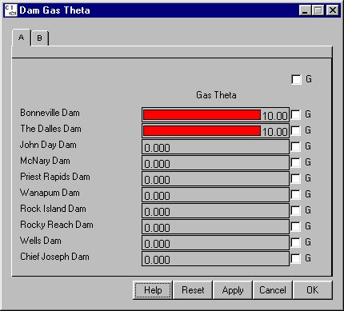

Dam Gas Theta
Selecting Dam Dam Gas Theta opens a window for setting the mixing parameter Gas Theta for each dam. This mixing parameter determines the level of mixing between the left-bank and right-bank flows in the tailrace of the dam and the resulting gas levels in each flow upon exiting the dam. This essentially determines the amount of mixing between the spill flow and the powerhouse flow in the tailrace. See the TDG Saturation > 100%: Dam section to determine whether the spill side is left or right, looking downstream, at a specific dam. Setting Gas Theta to zero results in no mixing between the spill and powerhouse flows and a value of 10 allows for complete mixing between the flows.
Dam Gas Theta opens a window for setting the mixing parameter Gas Theta for each dam. This mixing parameter determines the level of mixing between the left-bank and right-bank flows in the tailrace of the dam and the resulting gas levels in each flow upon exiting the dam. This essentially determines the amount of mixing between the spill flow and the powerhouse flow in the tailrace. See the TDG Saturation > 100%: Dam section to determine whether the spill side is left or right, looking downstream, at a specific dam. Setting Gas Theta to zero results in no mixing between the spill and powerhouse flows and a value of 10 allows for complete mixing between the flows.
Gas Theta is different from K Entrain in that it determines how much mixing is happening between the powerhouse and spill flows in the tailrace where as K Entrain determines how much more gas is added to the system. Gas Theta will result in an exchange of gas between flows but the total amount of gas remains the same.
This is a Slider Input window. Click on the letter tabs to page through the list of dams.

Dam Gas Theta window